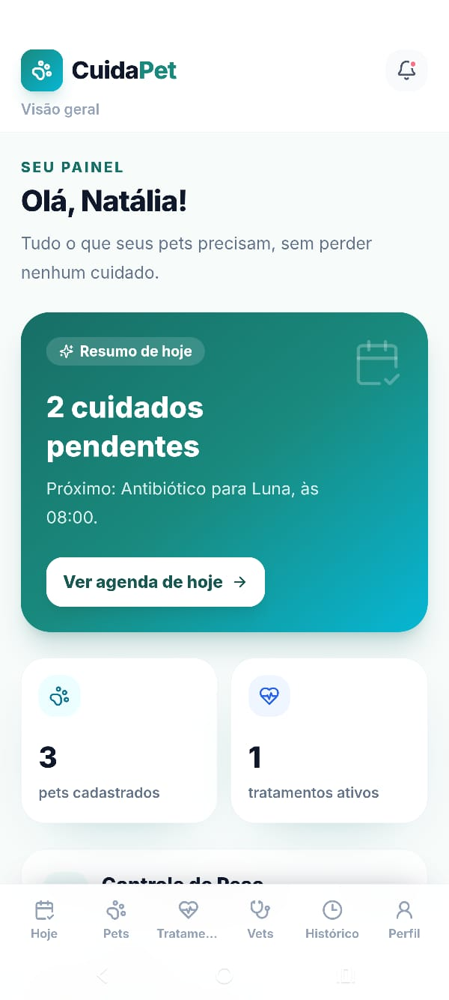
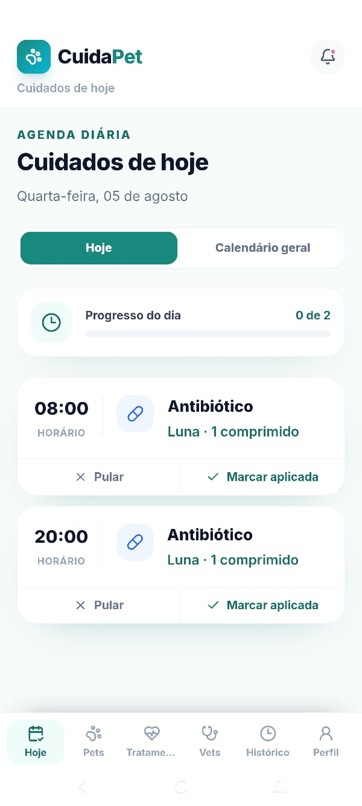
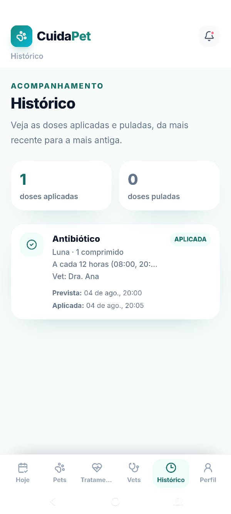
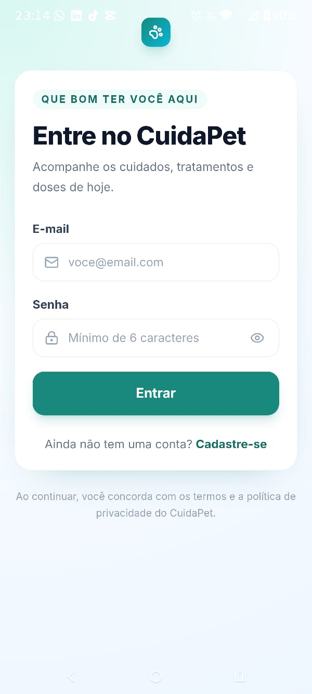
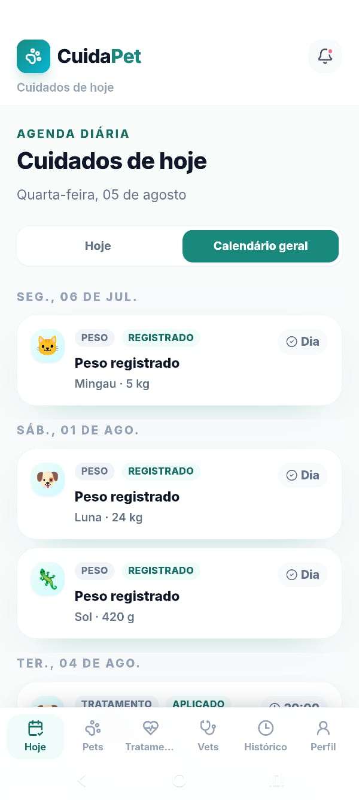
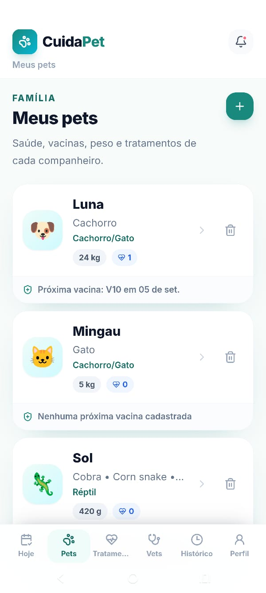
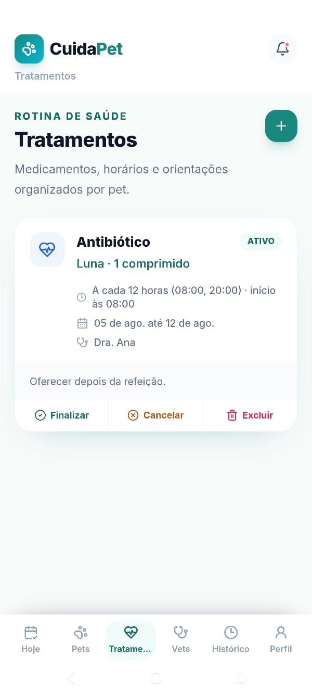
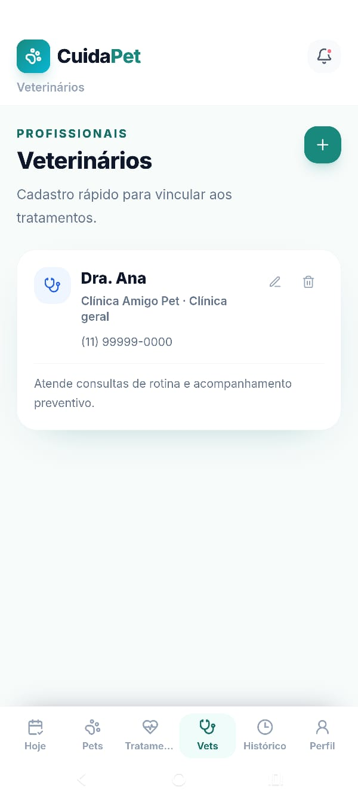
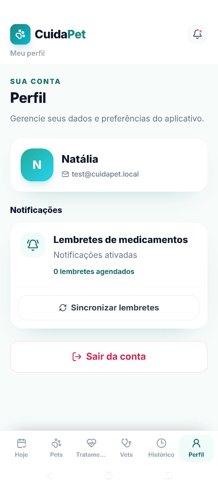
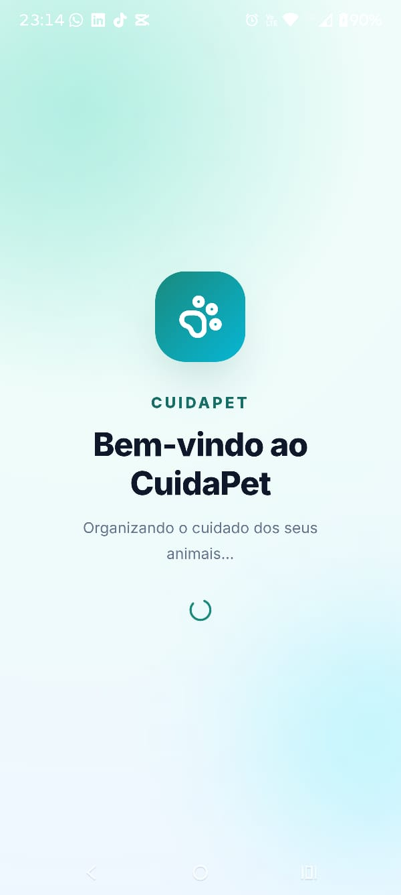

Sites e aplicações web
Um site para apresentar seu negócio com clareza ou uma aplicação para facilitar o acesso a informações e serviços, no computador e no celular.
Natalia Barros Silva
Engenheira de Software e Tech Lead
Desenvolvo aplicações web, APIs e integrações, combinando experiência prática e liderança técnica para construir e evoluir soluções com clareza.
São José dos Campos, São Paulo, Brasil
Soluções
Uma presença digital mais clara, ferramentas que acompanhem sua operação ou sistemas que conversem entre si. O primeiro passo é entender o contexto e o que precisa melhorar.
Um site para apresentar seu negócio com clareza ou uma aplicação para facilitar o acesso a informações e serviços, no computador e no celular.
Quando as ferramentas atuais já não acompanham a rotina, uma solução personalizada pode ajudar a organizar informações, atividades e etapas da operação.
Conexões entre plataformas para que informações circulem entre os sistemas utilizados pelo negócio, evitando a necessidade de repetir os mesmos cadastros.
Avaliação de tarefas repetitivas para identificar etapas que podem ser automatizadas, como reunir dados, atualizar registros e organizar rotinas de processamento.
Investigação de problemas e evolução de sistemas existentes, com melhorias planejadas para as necessidades da operação.
Apoio para analisar uma necessidade, revisar uma solução e definir próximos passos técnicos com clareza sobre alternativas e limites.
Projetos e estudos de caso
Aplicações, MVPs e estudos técnicos: diferentes formas de organizar informações, conectar sistemas e explorar soluções.
Projeto em destaque
Informações e rotinas de cuidados dos pets em um só lugar.
Cuidar de vários pets exige acompanhar vacinas, peso, tratamentos, horários de medicação e o histórico de cada animal, incluindo diferentes espécies.
Um aplicativo pensado para uso no celular, com cadastros de pets e veterinários, agenda diária, tratamentos, histórico e notificações locais para lembretes de medicação.
Consultar os cuidados pendentes, organizar a agenda e registrar doses aplicadas ou puladas. As capturas abaixo mostram esses fluxos do MVP.
A dosagem é informada manualmente, sem cálculo automático ou recomendações veterinárias pelo aplicativo.
/app.Capturas do MVP Android. Selecione uma imagem para ampliá-la em nova aba.










Pedidos e integração
Acompanhamento de pedidos e das mudanças de status.
Explorar como registrar pedidos, acompanhar sua evolução e consultar o histórico das mudanças de status em um fluxo integrado.
Um MVP com API, banco relacional e mensageria. A API publica eventos, e um worker — processo executado em segundo plano — recebe essas mensagens para atualizar o status dos pedidos.
Organização do fluxo de pedidos e do histórico de status, com etapas de processamento separadas do recebimento da solicitação pela API.
Projeto próprio · Publicação estática
Reunir minha trajetória, projetos e formas de contato em uma apresentação pessoal que também explique como posso ajudar com tecnologia.
Uma página com navegação por seções, conteúdo organizado por necessidade do visitante e layout adaptável ao celular e ao computador.
HTML semântico, CSS responsivo e JavaScript para o menu. Os arquivos estáticos permitem publicar no GitHub Pages sem backend ou etapa de build.
Laboratório técnico
Estudo de comunicação persistente para receber arquivos por WebSocket. O servidor em C# utiliza HttpListener, buffer de leitura e escrita em arquivo para explorar a transferência de dados em aplicações .NET.
Sobre e experiência
Sou Tech Lead e Desenvolvedora Full Stack, formada em Análise e Desenvolvimento de Sistemas e pós-graduada em Engenharia de Software.
Tenho aproximadamente cinco anos de experiência em desenvolvimento de software, atuando com análise de requisitos, definição de arquitetura, desenvolvimento de funcionalidades, correção de problemas, integrações entre sistemas, documentação técnica e apoio ao time.
Atualmente trabalho como Tech Lead na Open Solutions, participando de decisões técnicas, organização das demandas, acompanhamento dos desenvolvedores, análise de qualidade, redução de retrabalho e comunicação com produto, QA, consultoria e clientes.
Gosto de transformar processos complexos em soluções mais organizadas, rastreáveis e fáceis de manter, com interesse em arquitetura, qualidade, automação e aplicação prática de inteligência artificial no desenvolvimento.
Experiência
2023 até o momento
Open Solutions
2022 a 2023
Treevia
2021 a 2022
Delfos
Competências técnicas
Formação e certificações
Concluída em 2025 · 600 horas
2019 a 2022
Instituto Federal de São Paulo (IFSP)
Certificação
Certificação
Contato
Se você quer criar uma solução, conectar ferramentas ou evoluir um sistema, conte um pouco sobre o contexto e o que gostaria de melhorar. A partir disso, podemos avaliar os próximos passos.
Para oportunidades de engenharia de software e liderança técnica:
Falar sobre uma oportunidade profissional no LinkedIn